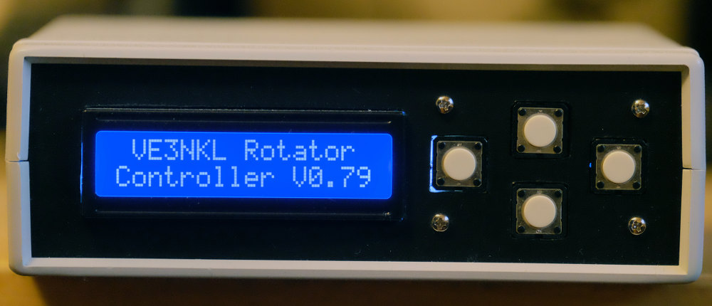
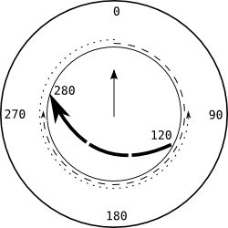
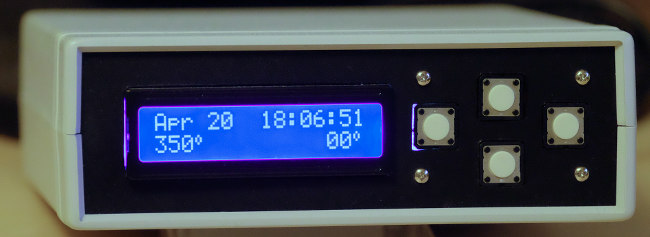
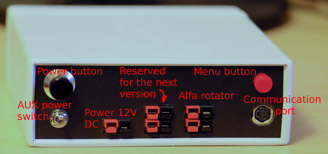

Rotator Controller
The controller was designed to work with the car roof rack-mounted satellite antenna system (a separate project), but can be used with any other design based on the supported rotator hardware.
Functionality Overview
The first version of the controller supports Alfa Radio rotator, model RAU only, performing horizontal rotation of the antenna system. For satellite use the fixed elevation technique can be employed. It is expected that the future versions of the controller could control the elevation antenna mechanism as well. The following functions are provided by the controller:
- Tracking time by using high precision on-board clock.
- Providing soft boundaries for horizontal rotation of the system (to prevent potential damage to cables). By default the antenna can be rotated by up to 270 degrees either way from its initial position. This boundary value can be changed in the settings menu.
- Providing manual mode where the antenna can be moved to any position as needed.
- Communicating with PC using USB interface for receiving rotation commands. The controller simulates basic commands of the Yaesu GS-232B rotator.
- Communicating with PC using USB interface for receiving a Sattelite pass data. The data for several future passes can be stored on the Arduino board. The stored data can be used by the controller to control the rotator autonomously, without being connected to any computer.
-  Automatically determines the direction of rotation for initial position of the antenna system when tracking a satellite using stored pass data. The shortest pass to the the AOS azimuth is not necessarily the best solution. Consider the following example: the initial direction of the antenna system is North (0 degrees). The rotation cannot exceed 270 degrees either way from the initial direction. The coming satellite's AOS is 120 degrees and AOL is 280 degrees (see the picture on the right). The controller will automatically choose rotating the antenna system counter clockwise for 240 degrees to reach the initial point of 120 degrees. After the satellite rises and starts moving clockwise toward the 280 degree azimuth, the antenna will follow it. If it were moved to the initial point using the shortest way (clockwise) and then tried to follow the satellite, the last 10 degrees of the satellite pass would not be covered due to the 270 degree rotation restriction. The functionality is provided by the controller when the satellite pass data are saved in the controller and it is working in the autonomous mode. When it follows the commands from a connected computer, the direction of rotation is determined by the appropriate computer program.
- Providing a sophisticated settings menu allowing an operator to switch between various modes, set many parameters and perform some commands (such as returning antenna to the parking position).
- Detecting jamming situation and automatically switching off the rotator's motor.
Components
The controller is based on the Arduino Micro Pro board, 16Mhz version. It also has a DC to DC down stepper to convert power from 12V CD to 5V DC. A Relay block controlled by the microprocessor is used to control the rotator. There is also a quartz-stabilized clock board for keeping accurate time (with an accuracy of less than a second per day). It communicates with the Arduino microprocessor using the I2C interface.
A 20-character 2 line display (40 characters in total) is also connected to the I2C bus. 5 buttons (4 on the front panel and the menu button on the back panel) are also connected to the Arduino board.
To view the schematic of the controller (a PDF document) click the icon on the rigth.
 In addition to
the mentioned above components the logic level converters were used where it was necessary to connect the circuits
using 5V and 3.3V TTL logic.
Note a RC filter at the sensor input. This input is used to read pulses from the rotator. The purpose
of the filter is to reduce jitter noise coming in from the rotator. This issue also exists for the buttons, but
their state is polled on a regular basis and, therefore, the jitter noise generated by them can be dealt with
in the software. As for the rotational sensor, its contacts are used to trigger an interrupt in the microprocessor.
To avoid multiple interrupts occurring in a small fraction of a second, a simple RC filter was used. The rest of the schematic
is self-explanatory.
In addition to
the mentioned above components the logic level converters were used where it was necessary to connect the circuits
using 5V and 3.3V TTL logic.
Note a RC filter at the sensor input. This input is used to read pulses from the rotator. The purpose
of the filter is to reduce jitter noise coming in from the rotator. This issue also exists for the buttons, but
their state is polled on a regular basis and, therefore, the jitter noise generated by them can be dealt with
in the software. As for the rotational sensor, its contacts are used to trigger an interrupt in the microprocessor.
To avoid multiple interrupts occurring in a small fraction of a second, a simple RC filter was used. The rest of the schematic
is self-explanatory.
Front Panel Controls
 The front panel has 4 control buttons (left, right, up and down). In the manual control mode (shown on the picture) the left and right buttons are used to rotate the antenna counter clock-wise and clock-wise correspondingly. The up and down buttons are not functioning in this mode but might be used in the future versions for the elevation control. All 4 buttons are used in the menu mode. In this mode the left and right buttons are used to switch between menu choices on the current menu level and the down button selects the desired choice. The up buttons acts like a backwards button in the menu mode. The same buttons can be used to change numeric values of some parameters in the menu as well (the initial antenna azimuth, for instance).
Connections and Other Controls
 All connection sockets of the controller are located on the back along with some additional controls. Normally, the controller is powered by a 12V DC source. It is used to power the electronics of the controller and the rotator. Although, when you upload pass information from your PC to the controller, it could be more convenient to power the controller's electronics from the PC's USB port, without using 12 V DC power supply or battery. This can be done by switching the AUX power switch to ON. A special cable is used to connect PC USB port to the controller's communication port. A rotator is connected to the controller using a 4 wire cable. Two wires are used to carry 12V power to the rotator and the other two are used to read the pulses generated by the rotator for every degree of its rotation. Another 4-pole socket is not presently connected anywhere and is meant to be used in the future versions of the device for elevation control.
Software
The software for the controller was written in C using Arduino SDK. One of the libraries (the one providing an interface to the Real-Time clock module) was updated to better suit the needs of this project. To view the controller source code click the icon on the right. The biggest challenge was to make the code as compact as possible due to the choice of the Arduino board. To do this, the embedded boot loader had to be removed to free some additional space. Uploading the code now has to be done by using an external programmer.
Thank you for reading.
73 !